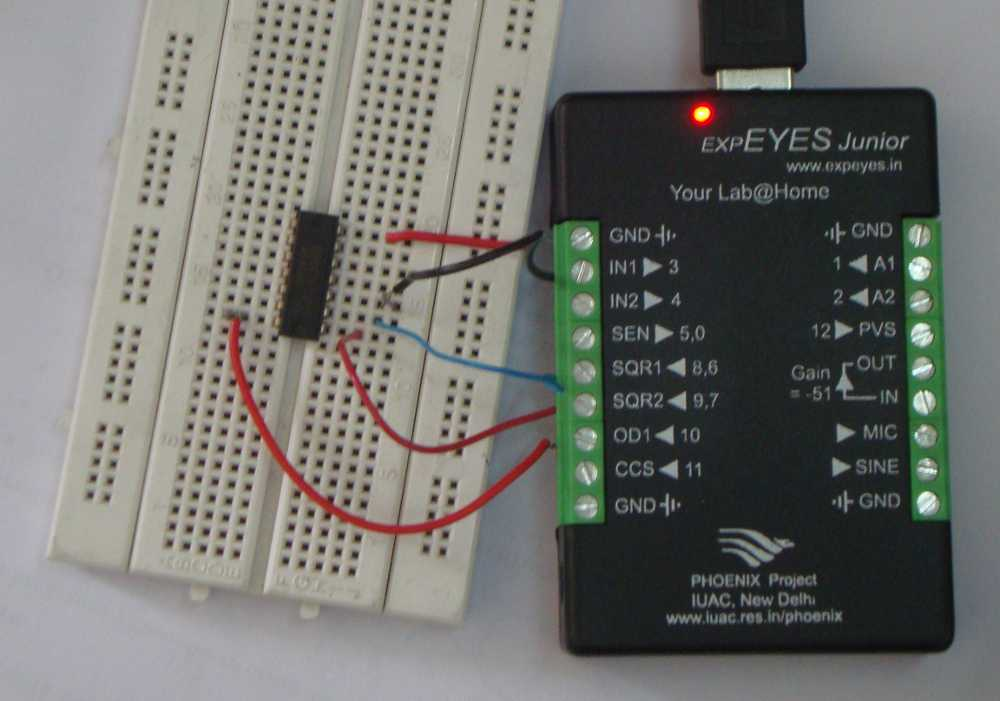

expEYES can be used as a test equipment for studying the logic gates. The TTL ICs 7432 & 7408 are powered from OD1. The inputs are provided by SQR1 and SQR2 set at 90deg phase difference. The experimental setup and outputs for AND and OR gates are shown below.
